+ Реконструкция (эпизод 4) Субтитры: Русские и Английские | 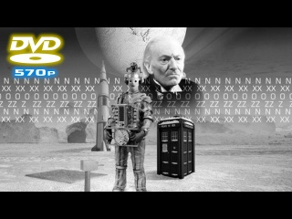 |
|---|---|
+ Черно-белая анимация (эпизод 4) Субтитры: Русские и Английские | 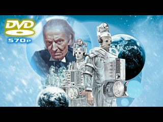 |
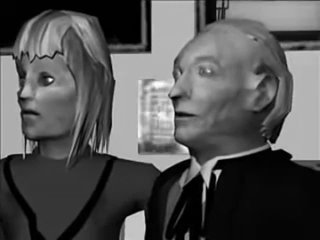 эп.4 - Aaron J Climas.mkv | 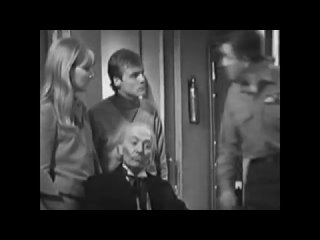 эп.4 - Отрывок- 7‑минутная редакция (Paul Watson) |
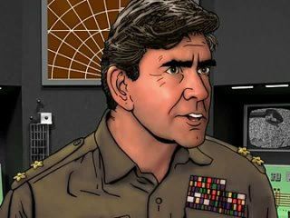 эп.4 - Отрывок- Возвращение Доктора (Garrett Gilchrist) | 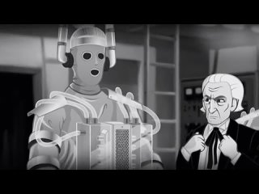 эп.4 - Отрывок- Доктор и Бен против киберлюдей (Chris Chatterton) |
| Первые 3 эпизода сохранились - 16mm t/r Утерян 4-й эпизод, имеется: - Реконструкция - Официальная анимация |
|---|
| |
«Десятая планета» сталкивает Первого Доктора, Бена и Полли с угрозой космического масштаба: к Земле приближается Мондас — бывшая планета‑близнец, чьи обитатели превратились в киберлюдей. На полярной базе Сноукэп герои видят, как киберлюди шаг за шагом берут контроль над ситуацией, а Мондас вытягивает энергию из Земли, готовя её к порабощению. Доктор понимает: остановить угрозу можно только выиграв время — ведь Мондас самоуничтожится, поглотив слишком много энергии. Напряжение нарастает из‑за конфликта людей: кто‑то хочет ударить по Мондасу Z‑бомбой, рискуя Землёй, а кто‑то верит в план Доктора. В финале Мондас взрывается, отключая киберлюдей, но битва истощает Доктора — и прямо на глазах у спутников он регенерирует, открывая новую главу в истории сериала.
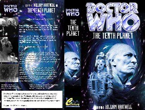 LC recon - сентябрь 1998 | 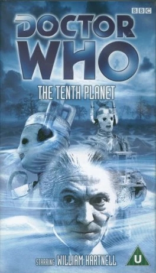 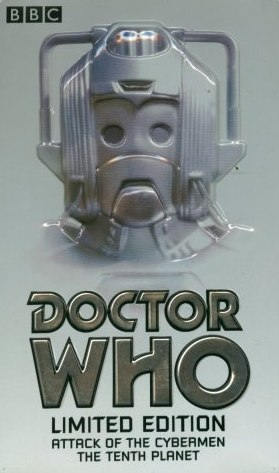 VHS+Boxset - ноябрь 2000 | 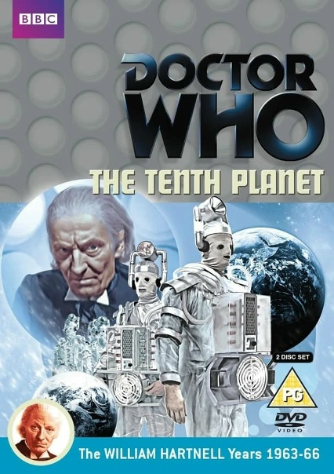 DVD - 14 октября 2013 * Версия в нашей группе |
|---|
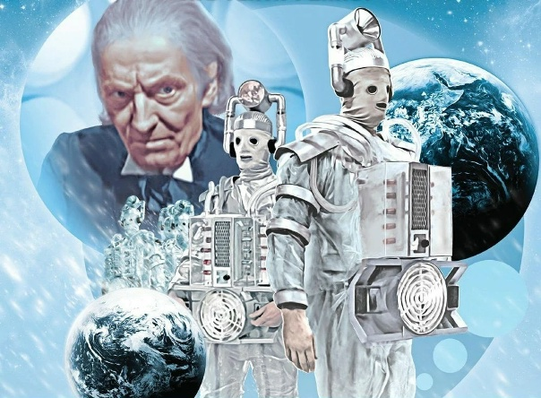
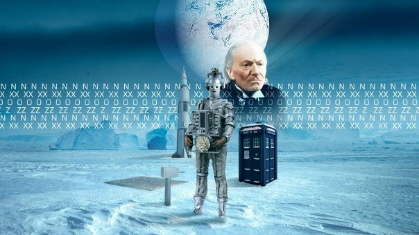
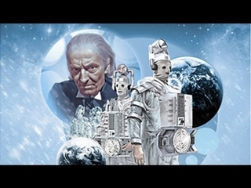